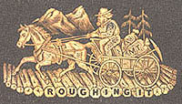

 |
Mono Lake or the Dead Sea of California, is one of her most extraordinary curiosities, but being situated in a very out-of-the-way corner of the country, and away up among the eternal snows of the Sierras, it is little known and very seldom visited. A mining excitement carried me there once, and I spent several months in its vicinity. It lies in a lifeless, treeless, hideous desert, 8000 feet above the level of the sea, and is guarded by mountains 2000 feet higher, whose summits are hidden always in the clouds. This solemn, silent, sailless sea -- this lonely tenant of the loneliest spot on earth -- is little graced with the picturesque. It is an unpretending expanse of greyish water, about a hundred miles in circumference, with two islands in its centre, mere upheavals of rent, and scorched and blistered lava, snowed over with grey banks and drifts of pumice stone and ashes, the winding sheet of the dead volcano, whose vast crater the lake has seized upon and occupied. The lake is 200 feet deep, and its sluggish waters are so strong with alkali that if you only dip the most hopelessly soiled garment into them once or twice, and wring it out, it will be found as clean as if it had been through your ablest washerwoman's hands. While we camped there our laundry work was easy. We tied the week's washing astern of our boat, and sailed a quarter of a mile, and the job was complete, all to the wringing out. If we threw the water on our heads and gave them a rub or so, the white lather would pile up three inches high. This water is not good for bruised places and abrasions of the skin. We had a valuable dog. He had raw places on him. He had more raw places on him than sound ones. He was the rawest dog I almost ever saw. He jumped overboard one day to get away from the flies. But it was bad judgment. In his condition, it would have been just as comfortable to jump into the fire. The alkali water nipped him in all the raw places simultaneously, and he struck out for the shore with considerable interest. He yelped and barked and howled as he went -- and by the time he got to the shore there was no bark to him -- for he had barked the bark all out of his inside, and the alkali water had cleaned the bark all off his outside, and he probably wished he had never embarked in any such enterprise. He ran round and round in a circle, and pawed the earth and clawed the air, and threw double summersets, sometimes backwards and sometimes forwards, in the most frantic and extraordinary manner. He was not a demonstrative dog, as a general thing, but rather of a grave and serious turn of mind, and I never saw him take so much interest in any thing before. He finally struck out over the mountains, at a gait which we estimated at about 250 miles an hour, and he is going yet. This was about five years ago. We look for what is left of him along here every day. A white man cannot drink the water of Mono Lake, for it is nearly pure lye. It is said that the Indians in the vicinity drink it sometimes, though. It is not improbable, for they are among the purest liars I ever saw. [There will be no additional charge for this joke, except to parties requiring an explanation of it. This joke has received high commendation from some of the ablest minds of the age. Horace Greeley remarked to a friend of mine that if he were ever to make a joke like that, he would not desire to live any longer.] There are no fish in Mono Lake -- no frogs, no snakes, no pollywogs -- nothing, in fact, that goes to make life desirable. Millions of wild ducks and sea gulls swim about the surface, but no living thing exists under the surface, except a white feathery sort of worm, one-half an inch long, which looks like a bit of white thread frayed out at the sides. If you dip up a gallon of water, you will get about fifteen thousand of these. They give to the water a sort of grayish-white appearance. Then there is a fly, which looks something like our house fly. These settle on the beach to eat the worms that wash ashore -- and any time, you can see there a belt of flies an inch deep and six feet wide, and this belt extends clear around the lake -- a belt of flies one hundred miles long. If you throw a stone among them, they swarm up so thick that they look dense, like a cloud. You can hold them under water as long as you please -- they don't mind it -- they are only proud of it. When you let them go, they pop up to the surface as dry as a patent office report, and walk off as unconcernedly as if they had been educated especially with a view to affording instructive entertainment to man in that particular way. Providence leaves nothing to go by chance. All things have their uses and their part and proper place in Nature's economy. The ducks and gulls eat the flies, the flies eat the worms -- the Indians eat the flies -- the wild oats eat the Indians -- the white folks eat the wild oats when the crops fail -- and thus all things are lovely. Mono Lake is 150 miles in a straight line from the ocean -- and between it and the ocean are one or two ranges of mountains -- yet thousands of sea-gulls go there every season to lay their eggs and rear their young. One would as soon expect to find sea-gulls in Tennessee. And in this connection let us observe another instance of Nature's wisdom. The islands in the lake being merely huge masses of lava, coated over with ashes and pumice stone, and utterly innocent of vegetation or anything that would burn; and the sea-gulls' eggs being entirely useless to any body unless they be cooked, Nature has provided an unfailing spring of boiling water on the largest island, and you can put your eggs in there, and in four minutes you can boil them as hard as any statement I have made during the past fifteen years. Within ten feet of the boiling spring is a spring of pure cold water, sweet and wholesome. So, in that island you get your board and washing free of charge -- and if nature had gone further and furnished a nice American hotel clerk who was crusty and disobliging, and didn't know any thing about the time tables, or the railroad routes -- or -- any thing -- and was proud of it -- I would not wish for a more desirable boarding house. Half a dozen little mountain brooks flow into Mono Lake, but not a stream of any kind flows out of it. It neither rises nor falls, apparently, and what it does with its surplus water is a dark and bloody mystery. All the rivers of Nevada sink into the earth mysteriously after they have run 100 miles or so -- none of them flow to the sea, as is the fashion of rivers in all other lands. There are only two seasons in the region round about Mono Lake and these are, the breaking up of one Winter and the beginning of the next. More than once I have seen a perfectly blistering morning open up with the thermometer at ninety degrees at eight o'clock, and seen the snow fall fourteen inches deep and that same identical thermometer go down to forty-four degrees under shelter, before 9 o'clock at night. Under favorable circumstances it snows at least once in every single month in the year in the little town of Mono. So uncertain is the climate in Summer that a lady who goes out visiting cannot hope to be prepared for all emergencies unless she takes her fan under one arm and her snow shoes under the other. When they have a Fourth of July procession it generally snows on them, and they do say that as a general thing when a man calls for a brandy toddy there, the bar keeper chops it off with a hatchet and wraps it up in a paper, like maple sugar. And it is further reported that the old soakers haven't any teeth -- wore them out eating gin cocktails and brandy punches. I don't endorse that statement -- I simply give it for what it is worth -- and it is worth -- well, I should say, millions, to any man who can believe it without straining himself. But I do endorse the snow on the Fourth of July because I know that to be true. |